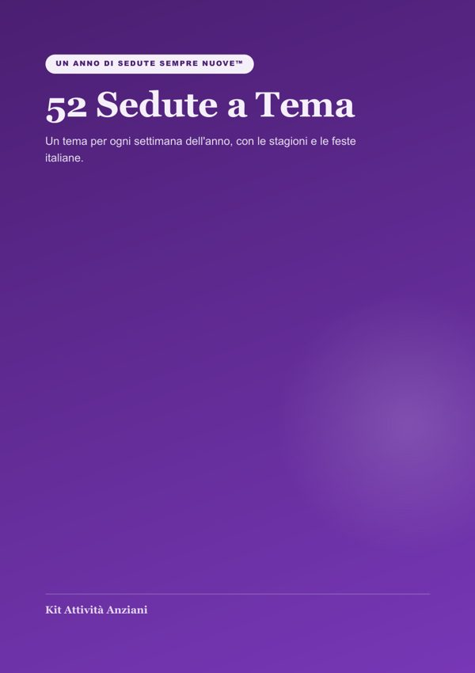

Prodotto principale
52 Sedute a Tema
Una seduta per ogni settimana dell'anno, con le stagioni e le feste italiane e gli esercizi del kit.
Apri →I tuoi bonus
Bonus 1
60 Nuove Schede Cognitive
Proverbi, parole, spesa, associazioni, sequenze e ricordi, a caratteri grandi.
Apri →Bonus 2Musica per Muoversi
40 canzoni italiane classiche divise per ritmo (solo i titoli, da cercare).
Apri →Bonus 3Attestati di Stagione
12 attestati da stampare, uno per ogni mese.
Apri →BonusPacchetto Natale
4 sedute natalizie pronte. Bonus azione rapida.
Apri →BonusCalendario dell'Anno da Stampare
Bonus segreto: i 52 temi mese per mese.
Apri →Da dove iniziare
- Cerca nelle «52 Sedute a Tema» la settimana in corso.
- Stampa le schede cognitive che ti servono.
- Prepara sul telefono 2 canzoni allegre e 1 lenta da «Musica per Muoversi».
- Alla fine del mese consegna l'attestato del mese.
Solo per uso personale. Vietata la rivendita o redistribuzione.